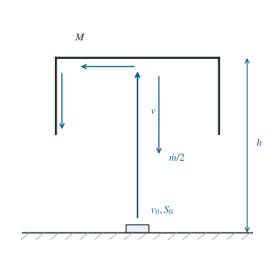

喷水托举倒置容器的稳定高度
喷流碰到倒置容器后分为两种出流；由质量流率和动量通量求可悬停的高度。
1 题目
1.1 物理情境
水从水平面积为 的喷泉孔以竖直向上的速率 射出，水的密度为 。质量为 的空容器倒置在喷流上方，内底距喷孔 。
1.2 物理过程
全部喷流水到达容器内底后，一半按质量流率计被内底导向容器内壁并沿壁流下；另一半沿原来的竖直路线以碰撞前的速率向下返回。容器在喷流作用下保持某一固定高度。
1.3 已知参数和理想化假设
水流稳定且无空气阻力，喷孔与内底之间只受重力作用；容器内水不积存，沿壁流下的一半水离开内底时的竖直速度可忽略。容器所受其他向上作用力忽略。
1.4 求解目标
求稳定悬停高度 ，并给出参数允许该高度非负的条件。

喷孔、内底及高度 的位置按统一竖直坐标绘制；分流箭头只表示出流方向。
2 思路与提示
喷孔与桶内底处的喷流横截面不同，但稳态质量流率相同。对碰后两股水分别计算竖直动量变化，再用容器平衡确定高度。
3 解答展开 / 收起
3.1 抵达内底的速度与质量流率
取喷孔处的竖直坐标为零，向上为正。水从喷孔到内底之间作无阻力运动，机械能守恒，故碰撞前速率 满足
在时长 内，喷孔喷出体积 ，质量为 。稳态时同样质量必穿过高处截面，故 ，即喷流面积 随上升减速而增大。用于碰撞动量账的质量流率仍是
3.2 分别计算两股水的竖直动量变化
每秒有 的水被内底导向壁面，竖直速度由 降至零；另有 的水由 变为 。水获得的竖直动量变化率为
因此水对容器内底的向上力为其反作用力，大小
该动量计算取紧贴内底的薄控制体；在接触区厚度趋于零的理想化中，其中水的重量可忽略，所以动量变化由内底力承担。第一股每单位质量损失竖直动量 ，第二股损失 ，各占一半，平均为 。因此不能把两股都按完全反弹计成 。
3.3 平衡并检查高度的存在性
容器静止要求第（4）式与其重力平衡，故碰撞前必须有
把第（5）式代回第（1）式，得到
非负高度等价于所需速率 ，即 。等号给出喷孔处的边界高度零；严格小于时才有正的悬停高度。对静止容器，托举力函数为 ，导数 。因此升高使托力小于重力、降低使托力大于重力，平衡高度具有回复性。这里“稳定高度”指该准静态回复性质；题设未给移动容器时分流规律和流动延迟，不能仅凭静态方程断言其完整耗散瞬态。
4 方法与讨论
对开放水流选控制体时，应追踪每股流体穿过控制面的质量流率和竖直速度，再对流体应用动量定理。内底附近的局部水压分布并非求总托举力的必需信息。